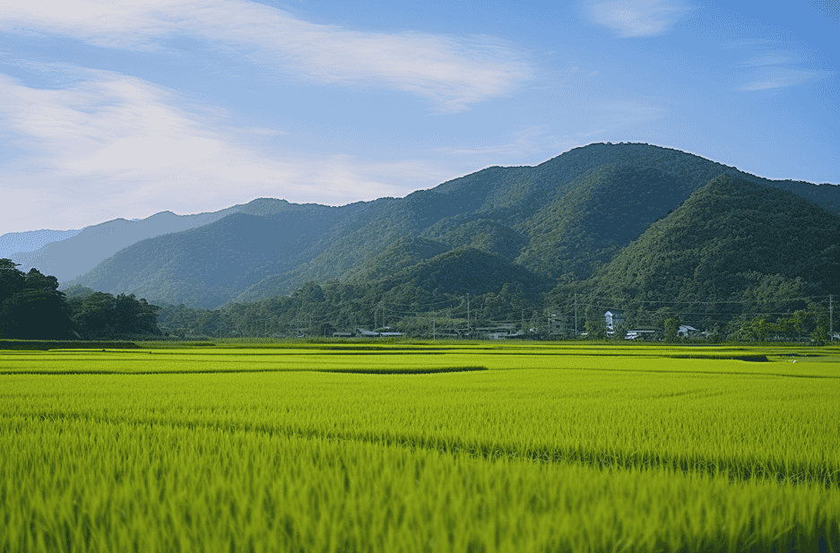
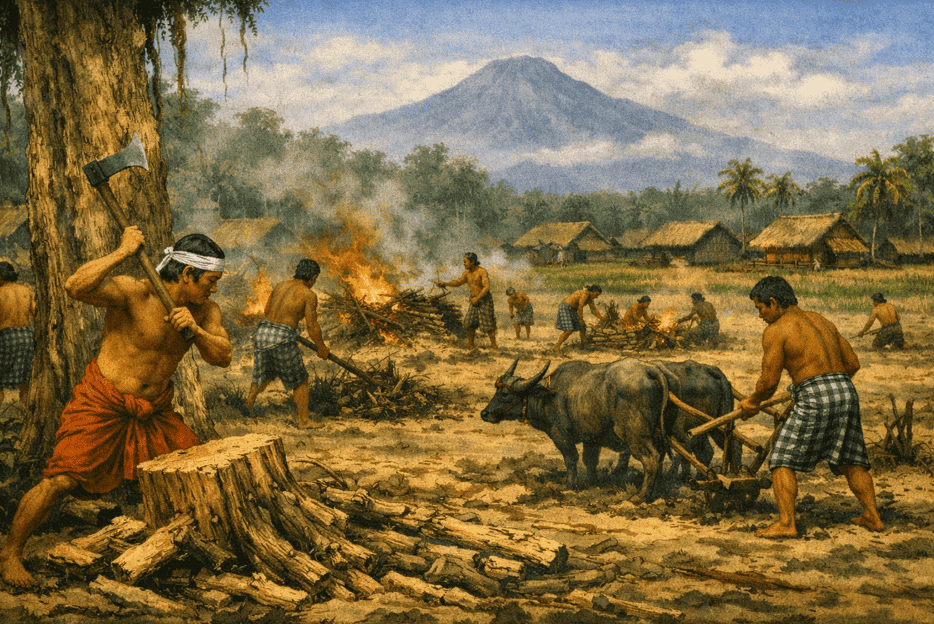
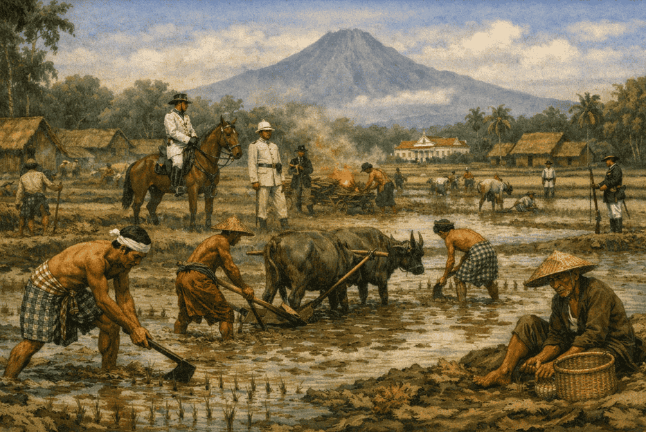
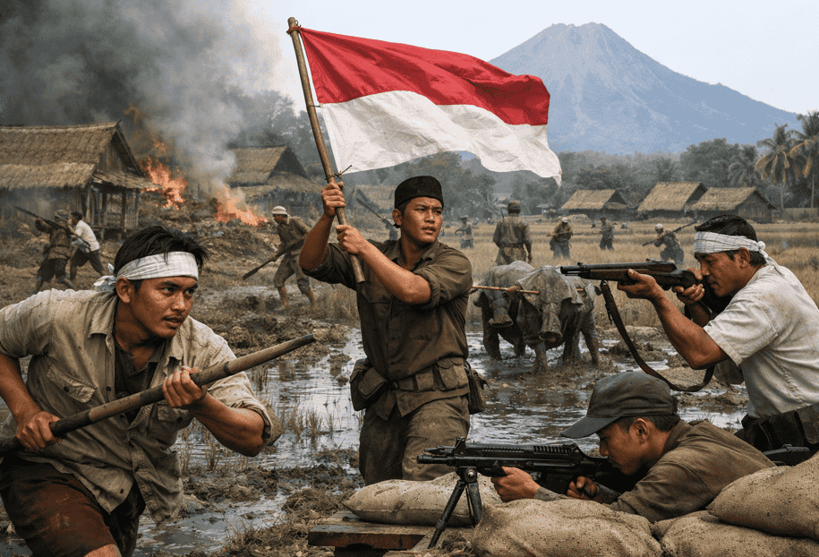
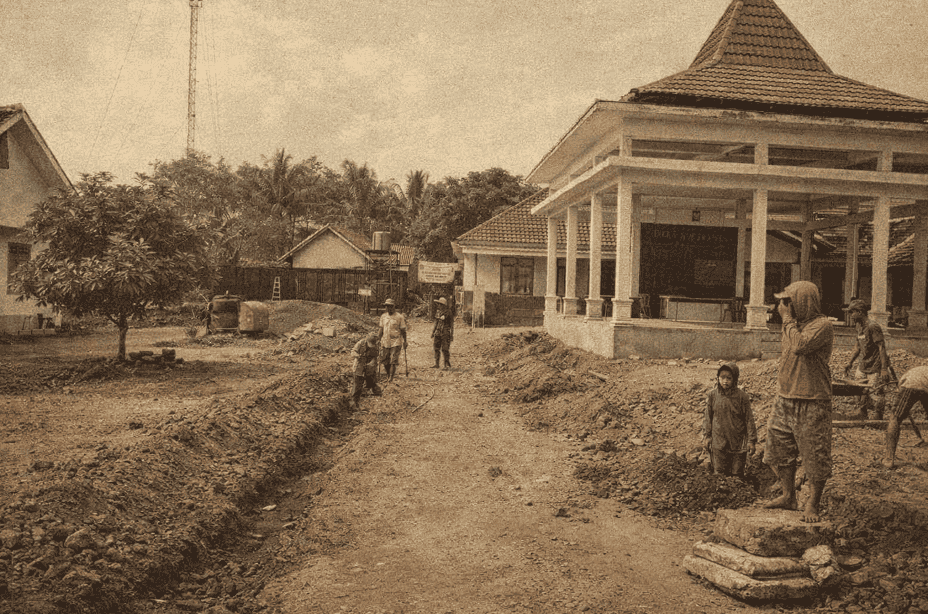
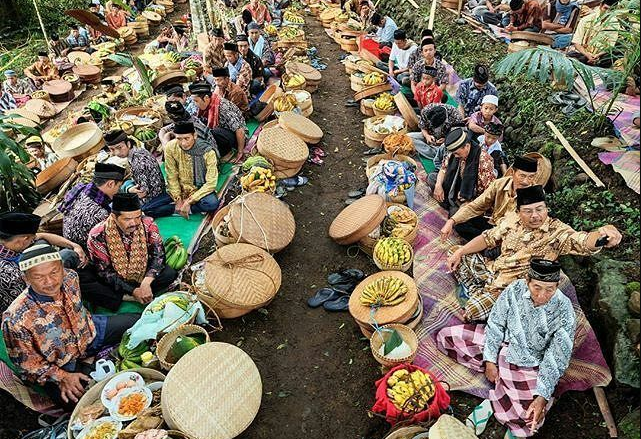
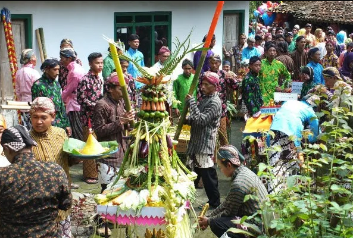
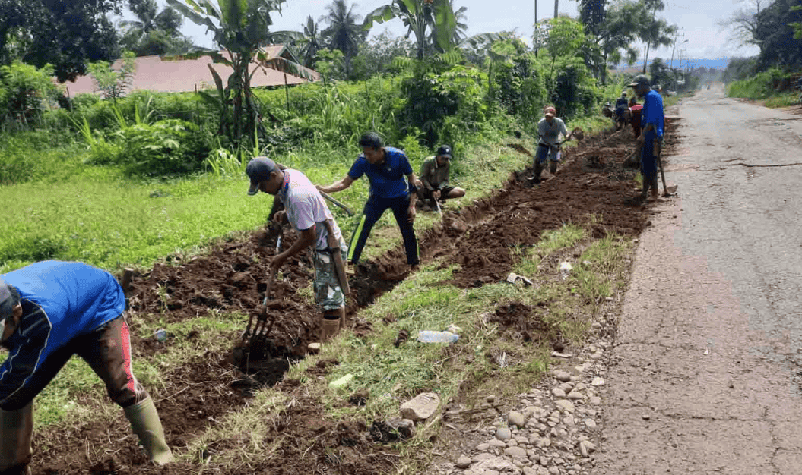

Sistem Informasi Pertanahan
Desa Munggung · Kecamatan Karangdowo
Pukul
👤
Memuat...
⏏
Desa Munggung · Kecamatan Karangdowo
Menelusuri jejak perjalanan Desa Munggung dari masa ke masa
Nama sebuah desa menyimpan cerita panjang yang terpatri dalam ingatan kolektif warganya. Desa Munggung memiliki akar historis yang kaya dan penuh makna.

Desa Munggung merupakan salah satu desa di Kecamatan Karangdowo, Kabupaten Klaten. Nama "Munggung" dalam bahasa Jawa sering dimaknai sebagai tempat yang lebih tinggi atau gundukan tanah, yang menggambarkan kondisi wilayah desa yang berada sedikit lebih tinggi dibanding area sekitarnya.
Seiring perkembangan waktu, wilayah ini mulai dihuni oleh kelompok masyarakat agraris yang membuka lahan pertanian dan membentuk komunitas desa. Aktivitas pertanian dan gotong royong kemudian menjadi dasar kehidupan sosial masyarakat Munggung hingga berkembang menjadi desa seperti saat ini.

Pada masa awal pembentukan permukiman, wilayah yang kini dikenal sebagai Desa Munggung mulai dibuka dan dikelola menjadi lahan pertanian oleh kelompok masyarakat pendatang yang menetap di kawasan tersebut.

Munggung menjadi salah satu desa penghasil pangan di bawah tekanan sistem tanam paksa Belanda. Sawah-sawah digarap dengan penuh perjuangan.

Warga Munggung turut berpartisipasi dalam perjuangan kemerdekaan Indonesia. Beberapa putra desa tercatat sebagai pejuang di garis depan.

Pembangunan infrastruktur desa dimulai. Jaringan irigasi teknis dibangun, meningkatkan produktivitas pertanian dan kesejahteraan warga.
Desa Munggung memasuki era digitalisasi dengan pengembangan Sistem Informasi Pertanahan (SIP) untuk mengelola data bidang tanah secara modern.
"Desa yang kuat adalah desa yang mengenal sejarahnya sendiri, menghargai tanah leluhurnya, dan menatap masa depan dengan penuh keyakinan."— PEPATAH JAWA · KEARIFAN LOKAL
Desa Munggung menyimpan kekayaan tradisi dan budaya lokal yang masih dilestarikan hingga kini oleh generasi penerus.


